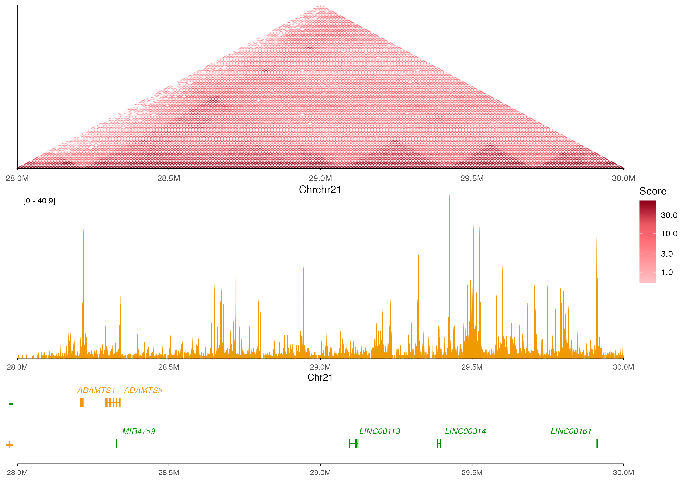
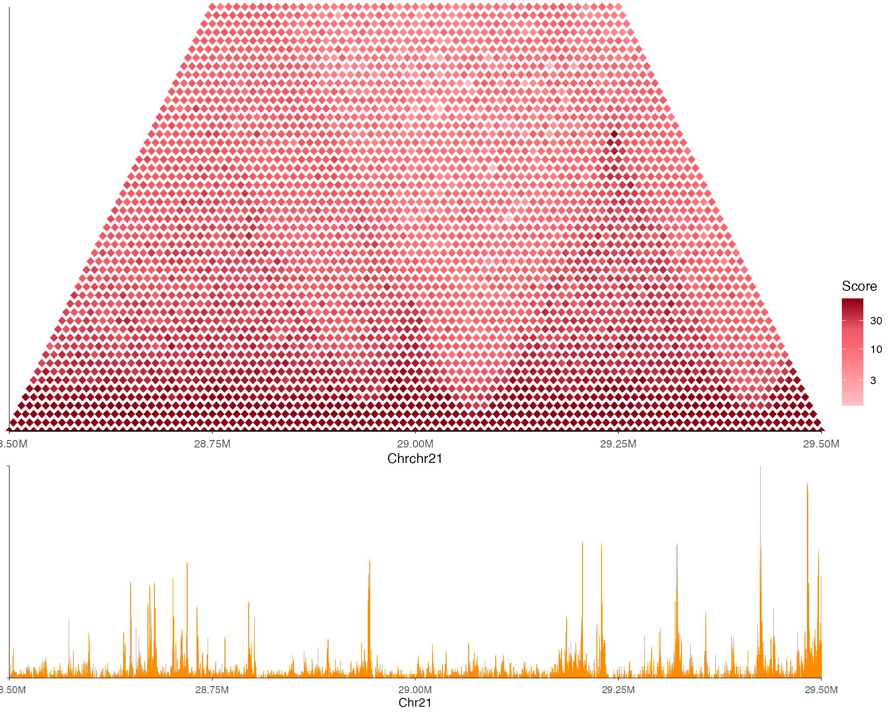
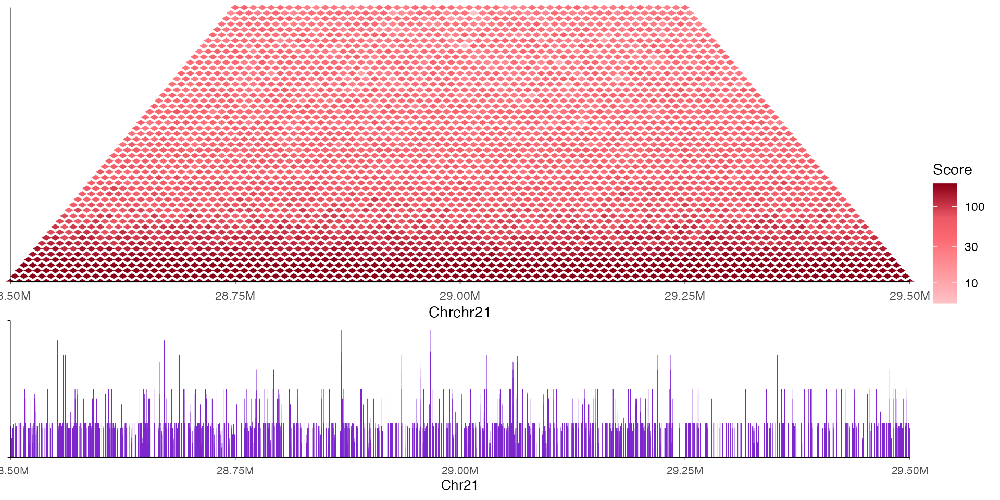
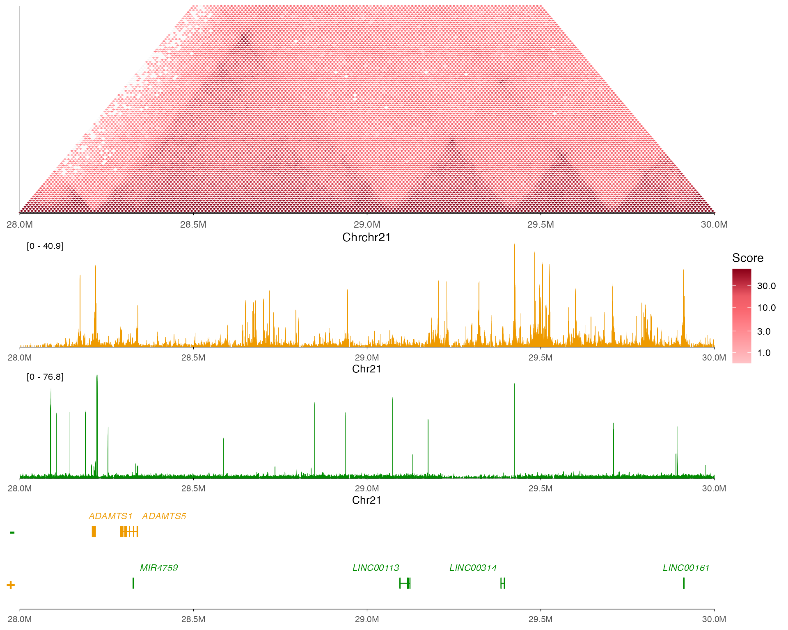
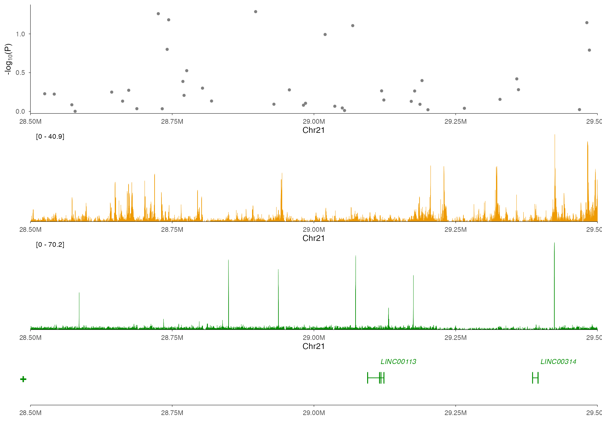
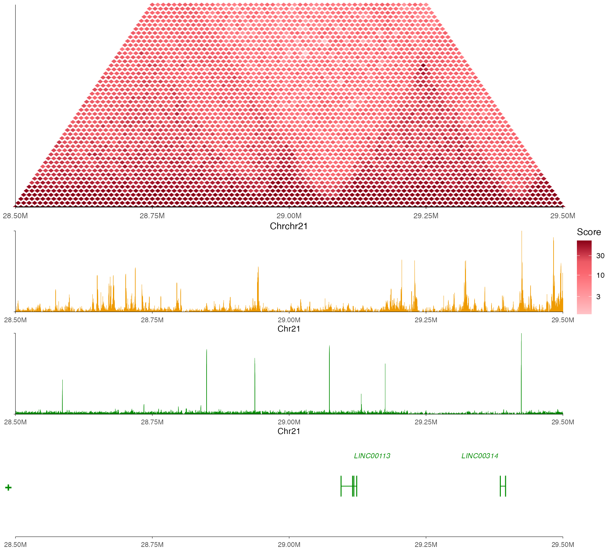

Showcase: Multi-omic Visualization with plotgardenerData
Source:vignettes/articles/showcase_plotgardener.Rmd
showcase_plotgardener.RmdThis vignette demonstrates ezGenomeTracks using realistic, publication-quality data from the plotgardenerData Bioconductor package. These examples showcase how to create comprehensive multi-omic genome browser views combining Hi-C, ChIP-seq, chromatin loops, and GWAS data.
Prerequisites
First, install the required packages from Bioconductor:
if (!requireNamespace("BiocManager", quietly = TRUE))
install.packages("BiocManager")
BiocManager::install("plotgardenerData")
BiocManager::install("TxDb.Hsapiens.UCSC.hg19.knownGene")
library(plotgardenerData)
library(TxDb.Hsapiens.UCSC.hg19.knownGene)
# Load the datasets we'll use
data("IMR90_HiC_10kb")
data("GM12878_HiC_10kb")
data("IMR90_DNAloops_pairs")
data("IMR90_ChIP_H3K27ac_signal")
data("GM12878_ChIP_H3K27ac_signal")
data("IMR90_ChIP_CTCF_signal")
data("hg19_insulin_GWAS")
# Set up TxDb for gene annotation
txdb <- TxDb.Hsapiens.UCSC.hg19.knownGene
# --- Preprocess data to match ezGenomeTracks expected formats ---
# Hi-C data: plotgardenerData uses duplicate column names, rename to pos1/pos2/score
preprocess_hic <- function(hic_df) {
colnames(hic_df) <- c("pos1", "pos2", "score")
hic_df
}
IMR90_HiC_10kb <- preprocess_hic(IMR90_HiC_10kb)
GM12878_HiC_10kb <- preprocess_hic(GM12878_HiC_10kb)
# Signal data: rename 'chrom' to 'seqnames' for consistency
preprocess_signal <- function(signal_df) {
if ("chrom" %in% colnames(signal_df)) {
colnames(signal_df)[colnames(signal_df) == "chrom"] <- "seqnames"
}
signal_df
}
IMR90_ChIP_H3K27ac_signal <- preprocess_signal(IMR90_ChIP_H3K27ac_signal)
GM12878_ChIP_H3K27ac_signal <- preprocess_signal(GM12878_ChIP_H3K27ac_signal)
IMR90_ChIP_CTCF_signal <- preprocess_signal(IMR90_ChIP_CTCF_signal)
# GWAS data: rename columns for ez_manhattan
colnames(hg19_insulin_GWAS) <- c("chr", "bp", "p", "snp", "LD")
# Remove 'chr' prefix for consistency
hg19_insulin_GWAS$chr <- gsub("^chr", "", hg19_insulin_GWAS$chr)Available Datasets
plotgardenerData provides several datasets from ENCODE cell lines: |
Dataset | Type | Cell Line | Description | |———|——|———–|————-| |
IMR90_HiC_10kb | Hi-C | IMR90 | 10kb resolution contact
matrix | | GM12878_HiC_10kb | Hi-C | GM12878 | 10kb
resolution contact matrix | | IMR90_DNAloops_pairs | Loops
| IMR90 | Chromatin loop calls | |
IMR90_ChIP_H3K27ac_signal | Signal | IMR90 | H3K27ac
ChIP-seq | | GM12878_ChIP_H3K27ac_signal | Signal | GM12878
| H3K27ac ChIP-seq | | IMR90_ChIP_CTCF_signal | Signal |
IMR90 | CTCF ChIP-seq | | hg19_insulin_GWAS | GWAS | - |
Insulin-related associations |
All data is aligned to hg19 and covers regions on chromosome 21.
Example 1: Hi-C Triangle with Signal Track
The most common multi-omic view combines Hi-C contact data with ChIP-seq signal.
region <- "chr21:28000000-30000000"
# Hi-C track (triangle view)
hic_track <- ez_hic(
IMR90_HiC_10kb,
region = region,
resolution = 10000,
style = "triangle",
palette = "cooler",
transform = "log10"
)
# H3K27ac signal track
h3k27ac_track <- ez_coverage(
IMR90_ChIP_H3K27ac_signal,
region = region,
colors = "orange2",
y_axis_style = "simple"
)
# Gene track
gene_track <- ez_gene(txdb, region = region)
# Stack all tracks
vstack_plot(
hic_track,
h3k27ac_track,
gene_track,
region = region,
heights = c(1, 0.5)
)
Example 2: Comparing Cell Types
Compare chromatin architecture between IMR90 (fibroblast) and GM12878 (lymphoblastoid) cells.
region <- "chr21:28500000-29500000"
# IMR90 tracks
hic_imr90 <- ez_hic(
IMR90_HiC_10kb,
region = region,
resolution = 10000,
style = "triangle",
palette = "cooler",
transform = "log10",
max_distance = 500000
)
signal_imr90 <- ez_coverage(
IMR90_ChIP_H3K27ac_signal,
region = region,
colors = "darkorange",
y_axis_style = "minmax"
)
# GM12878 tracks
hic_gm12878 <- ez_hic(
GM12878_HiC_10kb,
region = region,
resolution = 10000,
style = "triangle",
palette = "cooler",
transform = "log10",
max_distance = 500000
)
signal_gm12878 <- ez_coverage(
GM12878_ChIP_H3K27ac_signal,
region = region,
colors = "purple3",
y_axis_style = "minmax"
)
# Gene track (shared)
genes <- ez_gene(txdb, region = region)
# Create IMR90 view
imr90_view <- vstack_plot(
hic_imr90,
signal_imr90,
region = region,
heights = c(0.5)
)
# Create GM12878 view
gm12878_view <- vstack_plot(
hic_gm12878,
signal_gm12878,
region = region,
heights = c(0.5)
)
# Display IMR90 view
imr90_view
# Display GM12878 view
gm12878_view
Example 3: Chromatin Loops
Chromatin loops connect distant regulatory elements. The
ez_link() function visualizes these interactions as
arcs.
region <- "chr21:28000000-30000000"
# Chromatin loop track showing DNA interactions
ez_link(
IMR90_DNAloops_pairs,
region = region,
direction = "down",
colors = "blue3",
size = 0.8,
alpha = 0.7
)Note: This example is shown as code only due to a rendering limitation with bezier curves in knitr documents. Run this code interactively to see the loop visualization.
The loops connect enhancer-promoter pairs and indicate regions of 3D chromatin contact.
Example 3b: Multi-track Epigenomic View
Combine Hi-C contact frequency with ChIP-seq signal tracks to interpret chromatin architecture.
region <- "chr21:28000000-30000000"
# Hi-C track
hic_track <- ez_hic(
IMR90_HiC_10kb,
region = region,
resolution = 10000,
style = "triangle",
palette = "cooler",
transform = "log10",
max_distance = 1000000
)
# H3K27ac signal (active enhancers/promoters)
h3k27ac_track <- ez_coverage(
IMR90_ChIP_H3K27ac_signal,
region = region,
colors = "orange2",
y_axis_style = "simple"
)
# CTCF signal (architectural protein marking loop anchors)
ctcf_track <- ez_coverage(
IMR90_ChIP_CTCF_signal,
region = region,
colors = "green4",
y_axis_style = "simple"
)
# Gene track
gene_track <- ez_gene(txdb, region = region)
# Stack all tracks
vstack_plot(
hic_track,
h3k27ac_track,
ctcf_track,
gene_track,
region = region,
heights = c(0.5, 0.5, 0.5)
)
Example 4: GWAS Integration
Combine genetic association data with epigenomic context to interpret GWAS signals.
# Filter GWAS data to a region with signal
gwas_region <- "chr21:28500000-29500000"
# Regional Manhattan plot
manhattan_track <- ez_manhattan(
hg19_insulin_GWAS,
region = gwas_region,
y_axis_style = "full",
size = 1.5,
threshold_p = 5e-6,
threshold_color = "red"
)
# H3K27ac track - active enhancers may harbor causal variants
h3k27ac_track <- ez_coverage(
IMR90_ChIP_H3K27ac_signal,
region = gwas_region,
colors = "orange2",
y_axis_style = "simple"
)
# CTCF track - may indicate regulatory boundaries
ctcf_track <- ez_coverage(
IMR90_ChIP_CTCF_signal,
region = gwas_region,
colors = "green4",
y_axis_style = "simple"
)
# Gene track
gene_track <- ez_gene(txdb, region = gwas_region)
# Create integrated QTL view
vstack_plot(
manhattan_track,
h3k27ac_track,
ctcf_track,
gene_track,
region = gwas_region,
heights = c(0.8, 0.8, 0.5)
)
Example 5: Complete Multi-omic Browser
A comprehensive view combining Hi-C, ChIP-seq, and gene annotations for publication-quality figures.
region <- "chr21:28500000-29500000"
# Hi-C (chromatin architecture)
p_hic <- ez_hic(
IMR90_HiC_10kb,
region = region,
resolution = 10000,
style = "triangle",
max_distance = 500000,
palette = "cooler",
transform = "log10"
)
# H3K27ac (active enhancers/promoters)
p_h3k27ac <- ez_coverage(
IMR90_ChIP_H3K27ac_signal,
region = region,
colors = "orange2",
y_axis_style = "minmax"
)
# CTCF (insulator/architectural)
p_ctcf <- ez_coverage(
IMR90_ChIP_CTCF_signal,
region = region,
colors = "green4",
y_axis_style = "minmax"
)
# Genes
p_genes <- ez_gene(txdb, region = region)
# Final composition
vstack_plot(
p_hic,
p_h3k27ac,
p_ctcf,
p_genes,
region = region,
heights = c(0.4, 0.4, 0.5)
)
Tips for Working with plotgardenerData
Assembly: All plotgardenerData is aligned to hg19. Ensure your TxDb and other annotations match.
Resolution: Hi-C data is at 10kb resolution. Adjust your region size accordingly (at least 500kb-2Mb for meaningful patterns).
Memory: Hi-C matrices can be large. Use
max_distanceto limit data when visualizing narrow regions.Recommended regions: The data has best coverage around chr21:28,000,000-30,300,000.
Cell type context: IMR90 are lung fibroblasts; GM12878 are lymphoblastoid cells. Differences reflect cell type-specific chromatin organization.